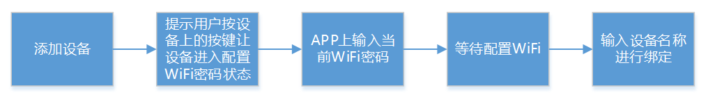
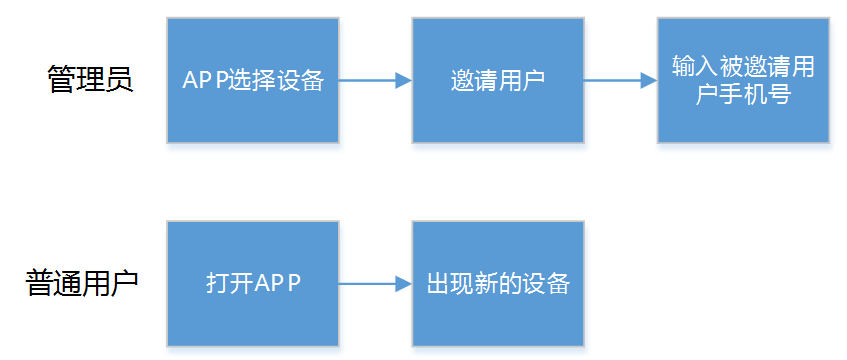
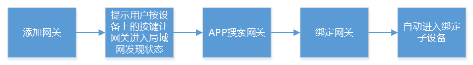
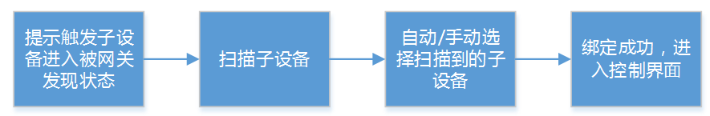

帐号管理
对于走云端的远程控制需要对用户进行鉴权，所以AbleCloud建议用户下载新的智能设备的APP后第一步要注册帐号。AbleCloud支持的帐号体系介绍见基本介绍-帐号管理
AbleCloud建议每个APP页面只实现一个功能，该功能用户操作成功以后再跳转到下个页面。APP开发者需要将整个流程中的意外情况做合理的处理，保证用户在使用过程中所有流程都是通顺的。
1、普通帐号注册
2、第三方帐号登录
3、普通帐号注册后绑定第三方帐号
4、第三方帐号登录后绑定普通帐号
5、使用帐号附加属性
帐号扩展属性建议在用户登录注册完成后进入到个人中心的时候再填写。注册过程中一般不适宜填写过多信息。
开发指导请参考：
设备管理
设备管理的基本介绍以及权限管理方式请参考：基本介绍-功能介绍-设备管理
独立设备管理
1、新设备绑定
对于一台新的设备，首先要进行绑定才能使用。第一个绑定设备的人是管理员。后面的人从管理员那里获得使用权。为了防止被其他人恶意绑定榜单，第一个人进行设备绑定的时候要求设备是云端在线状态（微信不需要）。如果设备不在线进行绑定，会绑定失败。普通用户只能够从管理员获得设备的使用权。 用户要完成对设备的绑定，需要获取到设备的ID信息。我们总结的对于不同类型的设备，可以获取设备ID的方式如下表：
| 二维码 | 局域网广播 | |
|---|---|---|
| WiFi | √ | √ |
| 蜂窝网络 | √ | X |
| 以太网 | √ | √ |
以WiFi设备为例，可以通过让设备在局域网内广播自己的ID，手机在局域网接收到设备的广播然后完成绑定。建议的用户交互流程如下：

客户端为微信时，绑定不要求设备在线（与APP相比，微信的特殊之处）,微信的绑定流程如下所示：
2、设备分享
第一个绑定的用户绑定成功后成为该设备的管理员，可以通过生成设备分享二维码或者邀请其他用户的方式分享设备的使用权。
1、管理员分享
2、管理员邀请

对于使用二维码分享方式分享设备使用权的，开发者可以自己定义二维码有效期，过了有效期再扫描的时候也不能够获得设备使用权。 对于使用邀请方式分享的，要求被邀请人已经注册。 客户端为微信时，目前AbleCloud只能够支持管理员分享的方式分享设备。
开发指导请参考：
网关型设备管理
1、绑定网关
对于一台（或一套）新设备，首先要绑定网关才能够使用，第一个绑定的人成为管理员。和WiFi设备的绑定一样，为了防止被恶意攻击，要求网关云端在线（微信不需要）。如果网关是通过WiFi连接无线路由器的，绑定网关的建议操作流程和绑定WiFi设备是一样的，参考“用户交互-WiFi设备”。对于网关是通过以太网连接路由器的场景，建议的用户交互流程如下：

客户端为微信、网关为WiFi设备时，同WiFi设备的流程一样：网关通过以太网连接路由器时，直接扫描网关上的二维码就完成了设备的绑定（不要求网关在线），流程如下：

2、绑定子设备
子设备作为独立设备时，同样有所有权问题，所以为了保证安全，同样要求子设备绑定时子设备是云端在线的（子设备能够连接上网关时基本都是云端在线的）。

客户端为微信时，操作流程是一样的。
3、设备分享
第一个绑定的用户绑定成功后成为该设备的管理员，可以通过生成设备分享二维码或者邀请其他用户的方式分享设备的使用权。对于网关型设备，管理员可以分享网关，此时网关即下面所有的子设备的使用权全部分享出去；也可以只分享子设备，此时被分享用户只有子设备的使用权。开发者也可以开发普通用户向管理员申请权限的功能，管理员同意后普通用户即有了设备的使用权。
1、管理员分享
2、管理员邀请
对于使用二维码分享方式分享设备 用权的，开发者可以自己定义二维码有效期，过了有效期再扫描的时候也不能够获得设备使用权。 对于使用邀请方式分享的，要求被邀请人要求已经注册。 客户端为微信时，目前AbleCloud只能够支持“管理员分享”的模式分享设备。
网关型设备的开发指导请参考：
home模型
1、设备为独立设备（WiFi）
当设备为独立设备时（为WiFi），建议的流程如下：
（1）创建home
home是有权限管理的，可以将home分享给其他人，则被分享的人对home下面的所有子组和子组里的设备都有使用权，但没有管理权。将home分享给其他人也可以看作将其他人添加到home里，这里从app上可以显示为添加成员到家庭。
（2）创建room
room没有权限管理，home的管理员不能把room分享给其他人，只能分享home和设备。对home有使用权的人就能看到子组以及子组下面的子组及设备。
（3）添加设备到房间（走完整的绑定WiFi设备的流程，参考用户交互-设备管理-WiFi设备）
创建好房间后，可以将新的设备添加到房间。用户首先选择房间，接着选择添加设备到房间，然后配置设备WiFi密码，最后添加设备到房间。具体实现时，是先添加设备到home，然后将设备从home移动到子组。
2、设备为网关型设备
当设备为网关型设备时，一般一个家庭有一个网关，网关下面有多个子设备，子设备分布在不同的房间。此时，建议的交互流程是：
（1）创建home（对于家庭场景，APP显示创建家庭）
同WiFi设备相同
（2）创建room（对于家庭场景，就是创建房间）
同WiFi设备相同
（3）添加网关到家庭（走和绑定WiFi设备一样的绑定网关的流程）
当家中只有一个网关时，建议采用此种流程。网关添加到家庭中后，再将各个子设备添加到房间。当家中有多个网关时，也可以采用此种流程，只是将子设备添加到房间的时候，需要选择添加到哪个网关。
（4）添加子设备到房间（走和网关添加子设备一样的流程）
选择房间，然后进入网关型设备的添加子设备流程。具体实现是先添加子设备到网关，然后移动子设备到房间。
3、微信
由于微信绑定设备是要先扫描设备的二维码的，所以，流程与app会有不同。因此建议的流程是：
- 扫描第一个设备的二维码关注公众号并绑定设备
- 扫描第二、三、四个设备的二维码，绑定设备
- 进入设备管理页面，创建家庭（home）
- 在家庭（home）下创建房间
- 将已经绑定的设备移动到房间
人员管理
AbleCloud支持两种设备分享模式。一种是通过分享码，普通用户通过扫描分享码获得使用权，一种是邀请模式，管理员填写普通用户的注册帐号，邀请该用户使用设备。对于home模型，采用同样的模式。管理员可以将home分享给普通用户：即管理员生成分享码，普通用户扫描加入home；也可以邀请普通用户加入组的使用人员列表，即管理员将普通用户的帐号添加进home。只有home能够设定权限，即能够分享home或者邀请普通用户加入home。
开发指导请参考：
说明：
管理员可以将home下面的设备单独分享给普通用户，普通用户只获得该设备的使用权。当单独分享的设备是网关时，普通用户对网关以及网关下面的所有子组、子设备有使用权。
room没有权限管理，不能够被单独分享授权。
管理员删除home，则home解散，同时相当于删除了home下的所有设备。用户对home，room以及下面的所有设备的使用权失效。
管理员可以删除home的普通用户，被删除的用户对home以及下面的所有设备失去使用权。
设备附加属性
设备的扩展属性可以在设备绑定成功后即刻进行填写，也可以在编辑设备信息的时候进行填写，开发者可以根据自己的具体需求进行设计。
开发指导请参考：
和云端通信
如果是APP向设备发送控制指令，根据网络条件不同会有或长或短的响应时间。因此，我们建议，对于控制类指令，当用户控制指令发送以后APP即显示已经控制成功，当设备响应结果返回时，再根据返回结果修正APP状态。如果确实控制成功了，则不需要再给出提示，如果没有控制成功，修改APP相应显示为没有控制成功的状态并给出控制失败的提示。例如，APP远程控制一个插座的打开，当用户在APP上点击打开按钮的时候，APP上的按钮直接显示操作成功，以给用户及时的响应。如果APP远程打开插座成功，则APP不再有任何变化和提示；如果APP远程打开插座失败了，则APP页面上给出打开插座失败的提示，并把APP上显示的开关状态变为关闭。如果用户点击完打开就退出APP了，这时候如果打开失败了，建议给用户发送打开失败的推送通知。
对于APP请求设备和云端数据，如果是要设备返回相关数值的，网络环境比较差的情况下可能会有等待时间，建议APP在等待设备返回结果的时候给出相应的等待提示。
当APP上采用实时消息同步显示设备上报的数据时，在网络环境比较差的情景下，数据显示可能会不及时。此时，如果用户无法看到数据变化同时也不能进行任何操作，会导致用户焦虑。所以，建议对于实时显示数据的页面设计可以手动刷新数据的功能。这样，当实时数据显示没有变化时，用户可以手动刷新。
一般来讲，当APP没有打开的情况下，对于需要定时上报数据的设备也一般不建议设备高频次快速上报数据。但是在APP打开的情况下开启实施消息同步时，为了用户能快速及时的看到设备的数据和状态的变化，需要将设备的上报时间间隔变小。然后，在APP退出或者离开监控的页面的时候，再把设备的上报间隔变回原来的值。因此在设备开发时，需要开发调整上报频率的功能；在APP开发时，需要在进入需要实时监控设备状态变化的页面时给设备发一条指令，通知设备快速上报数据，当APP离开该页面的时候，再发一条指令，通知设备使用正常的上报间隔。
以上为开发建议，仅供参考。
具体的开发方法请参考：
局域网通信
如果要求用户进入到局域网以后，app和设备的交互能够自动切换到局域网模式，而不再通过云端，那么对于用户来讲，最好的交互是完全感受不到这种切换。
我们提供的接口能够帮助厂商直接获取到当前设备的在线状态：云端和局域网在线、云端在线、局域网在线、云端和局域网都不在线。因此APP开发人员可以根据设备的在线情况调用相关的处理接口，是用户感受不到网络的切换。
定时任务
建议的用户交互请参考手机的闹钟设定方法。只是在闹钟设定的基础上增加对设备操作的设定。
OTA
基本介绍请参考：基本介绍-功能介绍-OTA
静默升级
静默升级不需要用户交互。
用户确认的升级
用户确认的升级，只需要在用户启动应用的时候，给一个提醒，由用户确认是否升级。
对于用户升级，AbleCloud提供两种场景的支持：
- 一种是用户收到升级通知后，选择“当前不升级”，下次启动APP的时候，同样还会收到升级固件的通知；
- 一种是用户启动APP后，选择“忽略当前版本”，则以后再启动APP的时候，不会再收到该版本的固件更新通知，直到有更新版本的固件发布。
还有一种场景为强制升级，即APP启动后弹出升级确认框，但是用户只能选择确定不能选择取消）。对于这种场景，APP开发者可以根据升级描述或者版本号来确定是否是强制升级。例如，版本号格式为 "1-1-1"这种，APP可以开发者可以自己约定，当版本号中的最后一位为特殊数字的时候，系统固件要强制升级，此时APP弹出的升级提示没有取消选项。
开发指导请参考：
推送
关于推送的基本介绍请参考：基本介绍-功能介绍-推送
1、群发通知
由厂商在友盟的后台自定义发送
2、和设备状态相关的推送
和设备相关的推送分为两种，一种是厂商默认设备状态变化时就给用户发送推送通知，比如门磁检测到门窗开关时就给用户发送通知，用户可以设定该推送消息关闭或者打开；一种是用户自定义设备阈值，设备状态触发该阈值时，给用户发送通知，如设定一个烧水的壶当水温从高往低变到50摄氏度时发送通知。
用户在APP打开状态下收到通知时可以从通知栏弹出通知消息，用户点击后进入到相关页面，也可以不是从通知栏弹出推送，而是直接在APP中弹出消息框。 用户在息屏或者APP没有在前台的状态下收到通知时，从通知栏弹出推送，点击通知可以进入到相关页面。
3、和用户状态相关的推送
一个典型的应用场景是，某用户被管理员解绑后收到被解绑通知。这种类型的推送厂商根据实际需求开发。